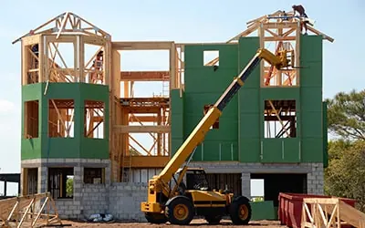
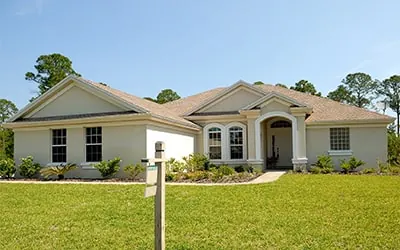
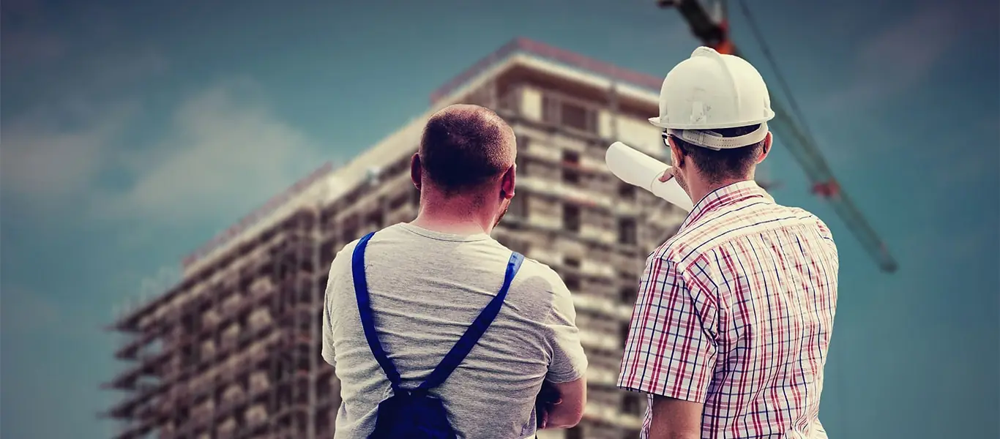

Layanan & Proyek
- Beranda
- Layanan & Proyek
Layanan Konstruksi Lengkap dalam Satu Atap
Memiliki satu mitra untuk seluruh siklus proyek berarti koordinasi lebih mudah, tanggung jawab lebih jelas, dan biaya lebih terkendali. BangunPrima menyediakan layanan terpadu dari perencanaan hingga pemeliharaan bangunan.
Pilih layanan yang Anda butuhkan di bawah ini, atau hubungi kami untuk mendapatkan rekomendasi paket terbaik sesuai tujuan dan anggaran proyek Anda.
Design & Build
Desain dan pembangunan oleh satu tim.
Build Only
Membangun sesuai gambar dari Anda.

Konstruksi Bangunan
Dari rumah tinggal hingga gedung bertingkat dan pabrik, kami membangun struktur yang kuat, aman, dan efisien. Pekerjaan dikelola dengan jadwal terukur dan pengawasan mutu berlapis.
- Pekerjaan persiapan, pondasi, dan struktur beton bertulang
- Struktur baja dan rangka atap baja ringan
- Pekerjaan arsitektur: dinding, lantai, plafon, dan atap
- Instalasi mekanikal, elektrikal, dan plumbing (MEP)
- Sistem pembangunan design & build maupun build only

Renovasi Rumah & Gedung
Rumah atau gedung lama Anda bisa tampil baru dan lebih fungsional. Kami menilai kondisi struktur terlebih dahulu agar renovasi aman dan tepat sasaran.
- Penambahan lantai dan perluasan ruang
- Perkuatan struktur dan perbaikan retak
- Penggantian atap, plafon, lantai, dan dinding
- Renovasi dapur, kamar mandi, dan fasad
- Pelaksanaan tanpa mengganggu aktivitas usaha (bertahap)

Desain Arsitektur
Desain yang indah harus bisa dibangun dan sesuai anggaran. Tim arsitek dan insinyur kami merancang bangunan yang estetis, efisien, dan memenuhi regulasi.
- Konsep desain dan gambar denah, tampak, potongan
- Gambar kerja struktur dan MEP lengkap
- Rencana anggaran biaya (RAB) rinci
- Visualisasi 3D dan animasi walkthrough
- Pengurusan dokumen PBG dan SLF

Desain Interior & Finishing
Ruang yang dirancang baik meningkatkan kenyamanan dan produktivitas. Kami menggabungkan desain interior dengan pekerjaan finishing langsung dari tim kami.
- Perencanaan tata ruang dan pemilihan material
- Kitchen set, lemari, dan furnitur custom
- Pekerjaan plafon gypsum, lantai, dan dinding dekoratif
- Pengecatan interior dan eksterior berkualitas
- Pencahayaan dan penataan ruang kantor serta ruko

Perbaikan & Pemeliharaan
Perawatan rutin memperpanjang usia bangunan dan menekan biaya perbaikan besar. Kami melayani kontrak pemeliharaan berkala maupun perbaikan darurat.
- Perbaikan atap bocor dan waterproofing
- Perbaikan retak, rembes, dan kerusakan struktur ringan
- Pemeriksaan dan perbaikan instalasi listrik & plumbing
- Pemeliharaan rutin gedung dan fasilitas pabrik
- Respon darurat dengan tim siaga

Pekerjaan Tanah & Infrastruktur
Dengan alat berat milik sendiri, kami mengerjakan pekerjaan tanah dan sipil secara efisien, aman, dan sesuai spesifikasi teknis.
- Pembersihan dan pematangan lahan
- Galian, timbunan, dan pemadatan tanah
- Jalan beton, paving, dan aspal lingkungan
- Saluran drainase, gorong-gorong, dan talud
- Pagar proyek dan fasilitas pendukung konstruksi
Pengalaman di Berbagai Jenis Proyek
Kami terbiasa menangani kebutuhan dan standar yang berbeda di setiap sektor.
Residensial
Rumah tinggal, cluster perumahan, townhouse, dan apartemen.
Komersial
Ruko, perkantoran, pusat perbelanjaan, hotel, dan restoran.
Industri
Pabrik, gudang, kawasan industri, dan fasilitas logistik.
Infrastruktur
Jalan, drainase, fasilitas umum, dan pekerjaan sipil pemerintah.
Armada Alat Berat dan Peralatan Modern
Kepemilikan peralatan sendiri membuat jadwal kerja lebih fleksibel dan biaya lebih efisien. Seluruh unit dirawat berkala dan dioperasikan oleh operator bersertifikat.
- Ekskavator — Kapasitas 0,3 - 1,2 m³ untuk galian dan pemuatan
- Tower & Mobile Crane — Pengangkatan material hingga 25 ton
- Batching Plant & Mixer — Pasokan beton siap pakai terkontrol mutunya
- Scaffolding & Bekisting — Sistem perancah standar untuk pekerjaan tinggi
- Total Station & Waterpass — Pengukuran presisi untuk pemetaan dan as bangunan
- Vibro Roller & Compactor — Pemadatan tanah dan lapis perkerasan jalan
Kualitas yang Dapat Diperiksa
Standar Material
Semen, baja tulangan, dan material utama berstandar SNI dari pemasok terverifikasi.
Uji Laboratorium
Kuat tekan beton, tarik baja, dan kepadatan tanah diuji sebelum dan selama pekerjaan.
Pengawasan Berlapis
Pelaksana, pengawas mutu, dan manajer proyek memeriksa hasil secara berjenjang.
Dokumen Lengkap
Gambar terbangun (as-built drawing), laporan uji, dan manual perawatan saat serah terima.
Proyek yang Telah dan Sedang Kami Kerjakan
Gunakan filter untuk melihat proyek berdasarkan status pengerjaan.
 Selesai
SelesaiGedung Perkantoran Sudirman Tower
Struktur beton 12 lantai dengan basement 2 level, rampung 2 bulan lebih cepat dari jadwal. Berjalan
BerjalanPematangan Lahan Kawasan Industri
Pematangan dan pengukuran lahan 18 hektare untuk kawasan pergudangan modern. Berjalan
BerjalanApartemen Taman Raya Residence
Dua menara hunian 24 lantai dengan total 640 unit dan fasilitas penunjang. Selesai
SelesaiPerumahan Cluster Griya Asri
48 unit rumah dua lantai dengan sistem pembangunan bertahap dan serah terima tepat waktu. Selesai
SelesaiRumah Tinggal Keluarga Hartono
Rumah modern dua lantai seluas 320 m² dengan struktur tahan gempa.SelesaiJalan & Drainase Perumahan Bumi Hijau
Pekerjaan jalan beton sepanjang 4,2 km beserta saluran drainase terpadu.
DirencanakanRumah Rangka Baja Ringan Modern
Hunian dengan rangka baja ringan dan konsep hemat energi, mulai konstruksi 2027.
SelesaiRenovasi Total Rumah Bu Ratna
Peremajaan menyeluruh rumah lama: struktur, atap, instalasi, dan finishing.
DirencanakanGedung Serbaguna Pemda
Gedung serbaguna 3 lantai kapasitas 1.200 orang, tahap perencanaan dan lelang.Seputar Layanan Kami
Apa perbedaan Design & Build dengan Build Only?
Pada Design & Build, kami menangani desain sekaligus pembangunan sehingga koordinasi lebih sederhana. Pada Build Only, kami membangun berdasarkan gambar dan spesifikasi yang telah Anda miliki.
Apakah harga bisa dipastikan sebelum pekerjaan dimulai?
Ya. Anda akan menerima RAB rinci per item pekerjaan. Perubahan lingkup hanya dilakukan dengan persetujuan tertulis (addendum).
Bisakah renovasi dilakukan saat rumah atau usaha tetap berjalan?
Bisa. Kami menyusun pekerjaan secara bertahap per area dan menjaga kebersihan serta keamanan agar aktivitas Anda tidak banyak terganggu.
Berapa biaya membangun rumah per meter persegi?
Biaya bergantung pada spesifikasi material, kompleksitas desain, dan lokasi. Hubungi kami untuk estimasi awal yang disesuaikan dengan kebutuhan Anda.
Apakah ada layanan perbaikan darurat?
Ada. Tim siaga kami melayani laporan kebocoran, kerusakan atap, dan gangguan instalasi, terutama bagi klien dengan kontrak pemeliharaan.
Punya Rencana Proyek? Mari Diskusikan
Konsultasi dan survei lokasi awal tanpa biaya. Tim kami siap merespons dalam 1 x 24 jam kerja.